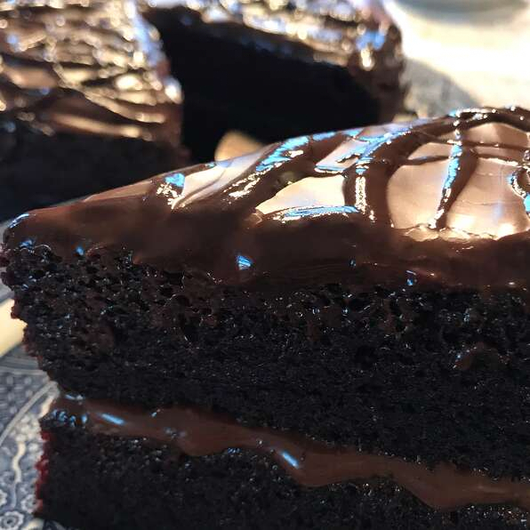

Chocolate Cake

Description
This chocolate cake is made with cocoa and hot coffee. It has been in my family forever. The secret is to not overbake it — that will ruin a chocolate cake every time.
Ingredients
- 2 cups all-purpose flour
- 2 cups white sugar
- 3/4 cup unsweetened cocoa powder
- 2 teaspoons baking soda
- 1 teaspoon baking powder
- 1/2 cup vegetable oil
- 1 cup milk
- 2 eggs
- 1 teaspoon vanilla extract
- 1 cup hot, strong coffee
Steps
- Preheat the oven to 350 degrees F (175 degrees C). Grease and flour a 9x13-inch baking pan.
- In a large bowl, stir together flour, sugar, cocoa, baking powder, and baking soda. Add oil, milk, eggs, and vanilla; mix until smooth. Stir in hot coffee last. Spread evenly into the prepared pan.
- Bake in the preheated oven for 25 to 35 minutes, or until a toothpick inserted into the cake comes out clean.
Return to index